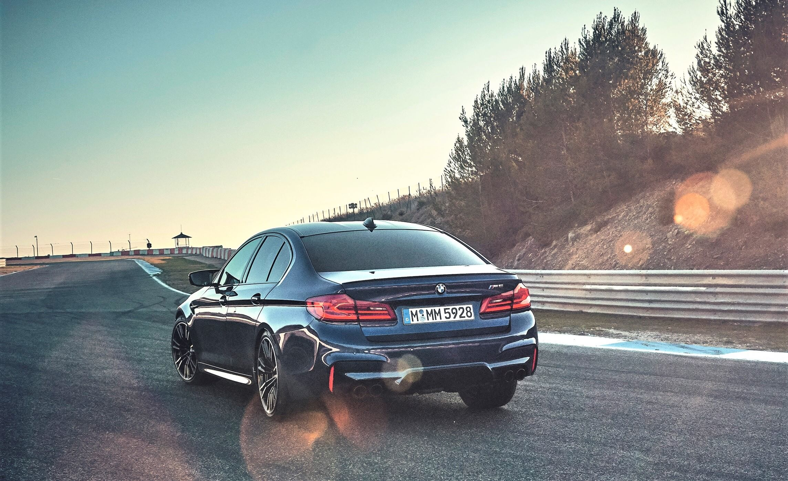

ფრანკ ვან მეელი, რომელიც ახლა M GmbH-ს შეფია, 2014 წლის ბოლომდე Audi quattro GmbH-ს ხელმძღვანელი გახლდათ, სადაც სრული ამძრავი ფაქტობრივად მე-11 მცნებაა. ჰოდა, რა გასაკვირია, რომ ეს ყველაფერი ახლა, პირველ რიგში, სწორედ ახალ M5-ზე აისახა.

შეცდომაში ნუ შეხვალთ: BMW-ში უკანა ამძრავი ახლაც მნიშვნელოვანია და მომავალშიც მნიშვნელოვანი იქნება. საქმე ის არის, რომ ახალ M5-ში წინა ღერძი მხოლოდ მაშინ ჩაერთვება საქმეში, როცა ამის საჭიროება იარსებებს. სხვანაირად რომ ვთქვათ, ახალ M5-ს აქვს 2WD რეჟიმი, რომელიც განგებ, სურვილის შემთხვევაში უნდა ჩართო და როცა ამას გააკეთებ, BMW-ს ნებისმიერი ერთგული მოყვარული ბედნიერი იქნება.